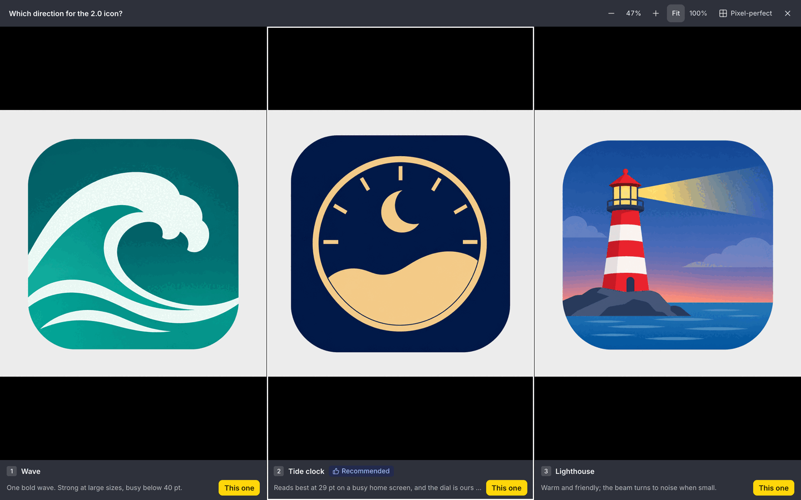

Decisions, not comment threads
When an agent needs you, it asks a question with options, pictures and what it recommends. The task waits on you, and your pick goes straight back to the agent.
- Pick one, pick one with changes, or ask for new options
- Compare options side by side at full size
- Answer from your phone: it installs to the home screen and notifies you
- A log keeps who asked, who answered and why
